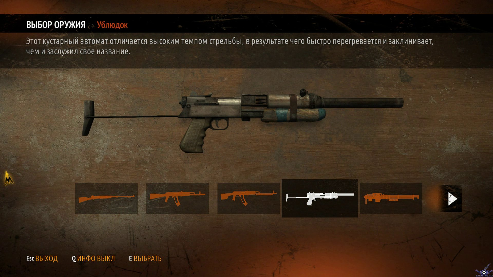
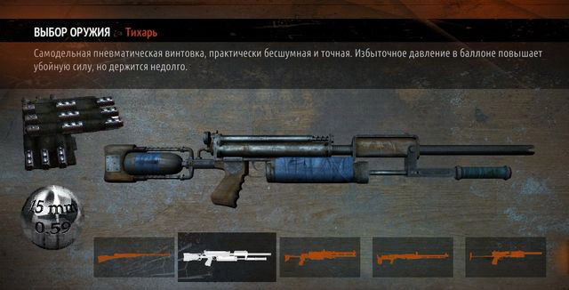

•Оружие• |
|---|
|
Маломощный кустарный автомат, разработанный на Кузнецком Мосту. Производство было начато после Мирового ядерного конфликта. Главной задачей инженеров было создание простого и дешёвого автоматического оружия под самый распространённый, и как следствие, самый востребованный калибр в Метрополитене. В чистом виде (то есть без модификаций) боевые характеристики Ублюдка крайне ущербны. Высокая вертикальная и горизонтальная (что куда важнее) отдача вкупе с неудобной мушкой значительно снижают точность стрельбы, вместе с быстрым перегревом, долгой перезарядкой и внушительной скорострельностью полностью оправдывают название автомата. Однако, широкая база модификаций игры Last Light позволяет частично нивелировать большую часть недостатков. Тихарь, созданный из-за постоянной нехватки боеприпасов, стал незаменимым оружием и для рейнджеров ордена "Спарта". Он не только стреляет вездесущими шариками от подшипников, но ещё и почти бесшумен. В конструкции задействована пневматическая система высокого давления, позволяющая в случае необходимости вести огонь и зажигательными пулями. Не забывайте следить за давлением воздуха в резервуаре.  |